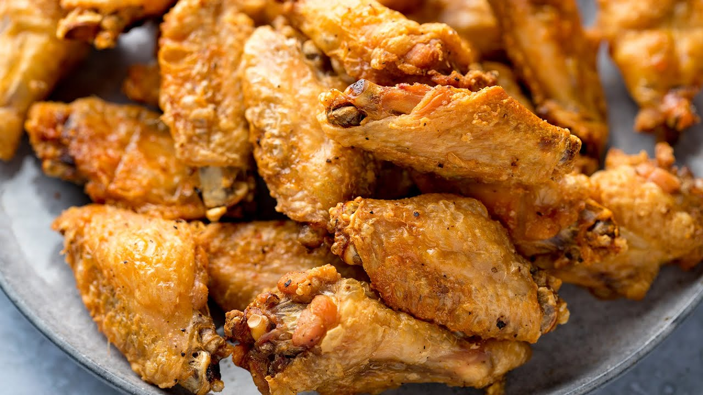

Cozy Chicken Wings

Description:
Growing up, buffalo wild wings and wingstop were my favorite restaurants to buy wings. However, the cost associated with frequenting these comfort food shops have significantly risen.
With this recipe, we can skip the line (and the price) and make our beloved chicken wings from the comfort of our homes at a fraction of the cost!
Instead of frying the wings, this recipe will cook the wings in the oven, which is significantly healthier and also more convenient! Read on for more details.
Ingredients:
- Fresh chicken wings
- Butter (unsalted or salted are both fine) Alternative: Oil instead of butter
- Kosher salt and black pepper
- Spices of your choice (we prefer garlic powder and paprika)
Steps:
- Preheat oven to 400°F
- Toss the wings in melted butter (or small amounts of oil) and sprinkle them with spices of your choice.
- Arrange the wings on a baking sheet fitted into a wire rack.
- Bake wings until fully cooked and crispy (Usually around 40 minutes in a 400°F oven).
- After fully cooked, lower oven temperature to 170°F and allow the wings to sit for 30-60 more minutes.
- Enjoy!